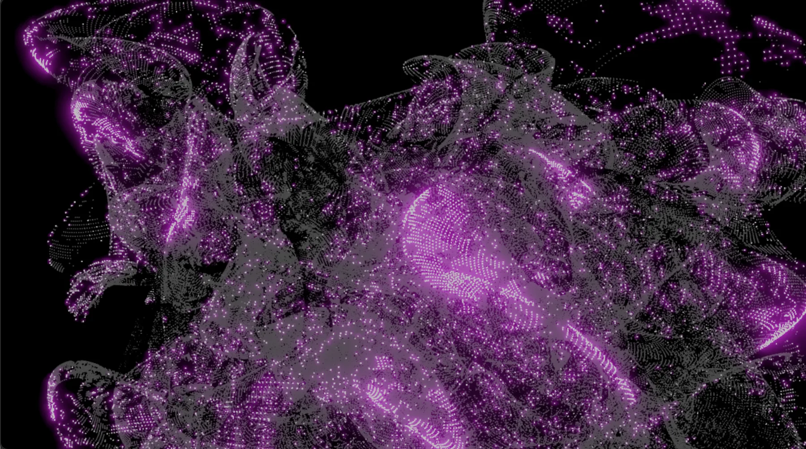

Earlier work / 2023
MEMI
Music, Emotion, Memory, Identity.

Project
An interactive web environment exploring music, emotion, memory and identity.
MEMI brings Music, Emotion, Memory and Identity into a web-based interactive environment. Built with Three.js, the project forms part of Park’s early exploration of emotional experience through digital space.
Documentation
Project photography and moving-image documentation will be added here.